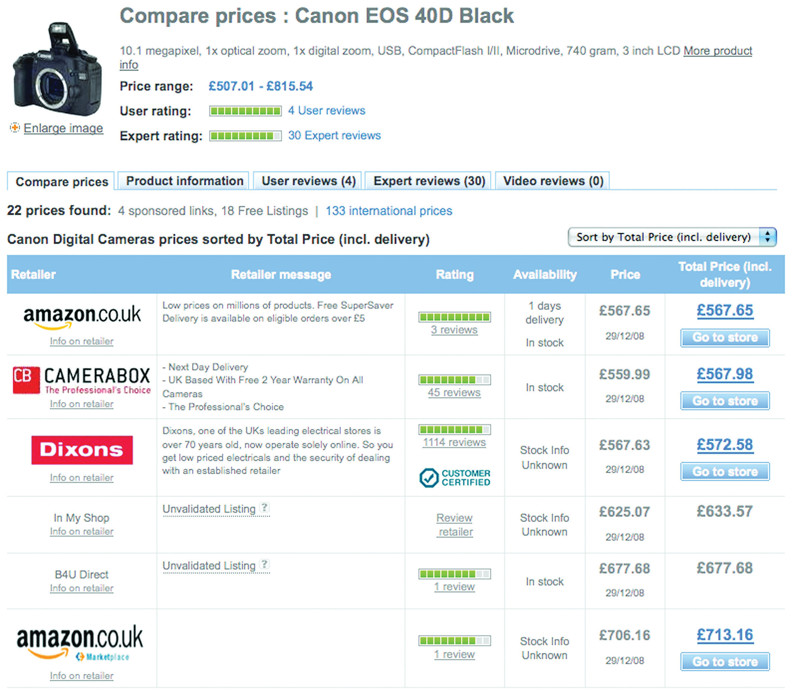
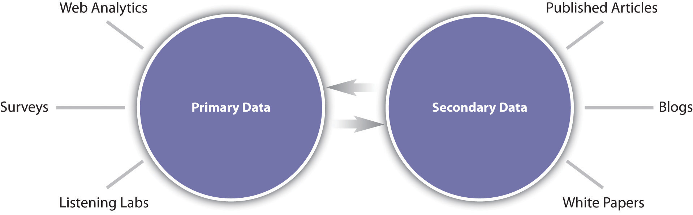
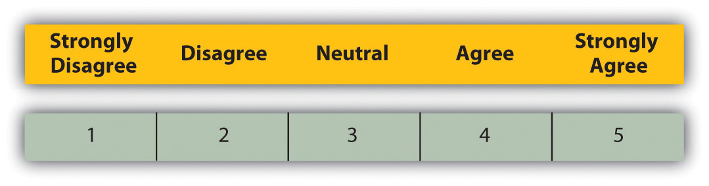
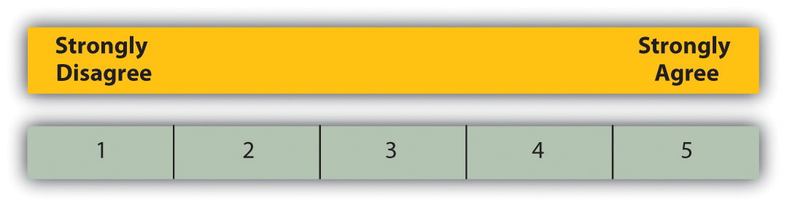
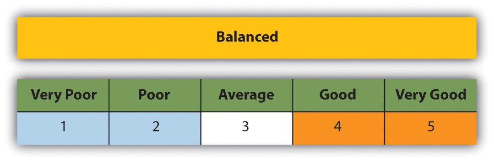
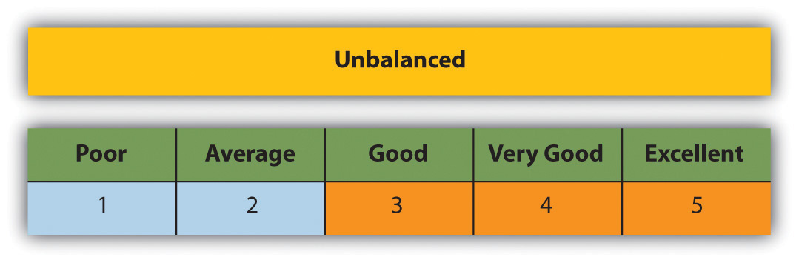
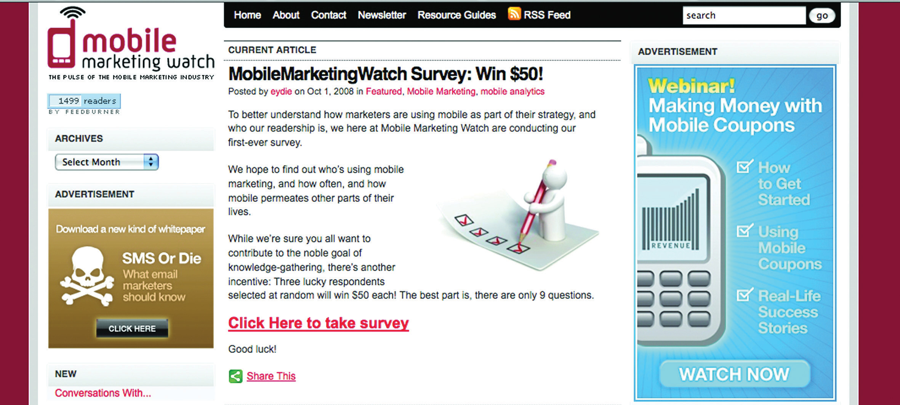

While the Internet was developed as a military project, the World Wide Web was developed as a tool for academics to allow information to be shared freely. This foundation of the Web as an information tool has had profound effects on the markets we transact in.
Consider that consumers are able to research companies and products easily, gathering information to compare prices and service with a few clicks of the mouse. Consumers are also able to share likes and dislikes easily, whether that information is shared with companies or with friends.
Figure 18.1
Services such as PriceRunner allow consumers to research product prices.
Likewise, the Web has an impact on market research. Its foundations in academia make it ideal for secondary research, with reports and data filed, indexed, and available via a few savvy searches. Technology can also be used to easily, and accurately, conduct surveys. The connected nature of the Web also makes it possible to record data about consumers’ online habits.
For example, when researching the penetration of broadband in a particular market, a few Web searches will reveal plenty of sources that can be compared and verified. If a company wants to gauge the demographics of visitors to its Web site, an online survey may be offered to Web site visitors. Third, online reputation management tools allow companies to track consumer sentiment expressed online.
Market research is a process that aids business decisions. It involves systematically gathering, recording, and analyzing data and information about customers, competitors, and the market.
Research can be based on primary data and information or secondary data and information. Primary research is conducted when data or information is gathered for a particular product or hypothesis. This is where information does not exist already or is not accessible and so needs to be specifically collected from consumers or businesses. Surveys, focus groups, research panels, and research communities can all be used when conducting primary market research.
Secondary research uses existing, published data and research as a source of research. It can be more cost effective than conducting primary research, and the Internet opens a wealth of resources for conducting this research. However, the data would have originally been collected for solving problems other than the one at hand, so they might not be sufficiently specific. That being said, secondary research can be useful in identifying problems to be investigated through primary research.
Research can also be classified as qualitative or quantitative. Qualitative research can be classified as exploratory. Qualitative research aids in identifying potential hypotheses, whereas quantitative research puts hard numbers behind these hypotheses. Qualitative research seeks to find out what potential consumer perceptions and feelings exist around a given subject. This research can often be used to advise the design of quantitative research, which relies on numerical data to demonstrate statistically significant outcomes.
The Internet is a useful tool for both primary and secondary research and can be used to gather both qualitative and quantitative data. In fact, the communities on the Web can be viewed as one large focus group, regularly and willingly sharing their opinions on products, markets, and companies. Today, organizations transacting online have a wealth of research information freely available to them, as well as sophisticated tools for gathering further data.
Market research should produce information that leads to actions.
Quantitative research gathers data that can be statistically analyzed to determine results. Data must be formally gathered and should be collected to test a hypothesis as opposed to determine a hypothesis.
Qualitative dataData that can be observed but not measured. Deal with descriptions. can be more difficult to quantify. Typically, because base sizes are smaller and not necessarily representative of the market under investigation (as it can be more expensive and time consuming to gather and analyze the data), qualitative data cannot be taken as quantified. They are, however, valuable in aiding a researcher in interpreting the market perspective. It is possible to combine approaches, producing data that can be used both qualitatively and quantitatively.
With larger sample sizes, qualitative data may be analyzed quantitatively.
For example, in online reputation management (ORM)The understanding and influencing of the perception of an entity online. This entails ensuring that you know what is being said about you and that you are leading the conversation., tools exist that can track brand-name mentions. These data can then be analyzed qualitatively, where researchers can examine the mentions and use their judgment to determine sentiment, or quantitatively, where mentions can be assigned numeric values across a range of categories that are used to generate a reputation score, such as BrandsEye’s online reputation algorithm.
When both qualitative and quantitative research are used, usually qualitative research takes place first to get an idea of the issues to be aware of, and then quantitative research tests the theories put forward in qualitative research.
Table 18.1 The Main Differences between Quantitative and Qualitative Research
| Characteristic | Qualitative Research | Quantitative Research |
|---|---|---|
| Group size | Small number of participants—usually focus groups of 6 to 10 respondents led by a moderator | Large number of respondents—100 or more, depending on the size of the population, are generally surveyed |
| Approach | Generates ideas and concepts—leads to issues or hypotheses to be tested | Tests known issues or hypotheses |
| Ends with hypotheses for further research | Begins with hypotheses | |
| Seeks complexity | Seeks consensus, the norm | |
| Context of issues | Generalization | |
| Disadvantages | Shouldn’t be used to evaluate preexisting ideas | Issues can only be measured if they are known prior to beginning the survey |
| Results are not predictors of the population | Sample size must be sufficient for predicting the population | |
| Advantages | Looks at the context of issues and aims to understand perspectives | Statistically reliable results to determine if one option is better than the alternatives |
Both quantitative and qualitative research can be conducted using primary or secondary data, and the Internet provides an ideal tool for both avenues.
Sample sizeThe number of units or respondents in a sample of the population. is an important factor in conducting research, and that sample should be representative of the population you are targeting as a whole. If your business transacts both online and offline, beware that using only online channels for market research might not be representative of your target market. However, if your business transacts only online, offline channels for your market research are less necessary.
Web analytics packages are a prime source of data. Using data such as search terms, referral URLs (uniform resource locators), and internal search data can lead to qualitative assumptions about the consumers visiting a Web site. However, when data are measurable and specific, such as impressions and click-through rates, this leads to quantitative data.
Research panels and research communities are two means for conducting research. Whereas research panels are primarily used when conducting qualitative research, research communities primarily provide quantitative dataData that can be measured or defined. Deal with numbers.. The Internet comes to the fore when considering research communities, as social media such as social networks and blogs already provide the framework for people to connect and interact with each other. Most panels, whether online or offline, are not about member-to-member interaction. Research panels seek to address the “what” using surveys to gather quantitative data. Research communities primarily use discussions, driven online by blogs and other media sharing communities.
For example, for the launch of a new product, a company might want to determine what customers have in their fridges. Quantitative analysis would be to develop a survey that could be completed by a representative sample of its target market, aimed at discovering what consumers have in their fridges..
Qualitative analysis would be to go to a community photo-sharing site, such as http://www.flickr.com, and use a simple search to look at the photos the members have uploaded of the content of their fridges (http://www.flickr.com/search/?q=in+my+fridge).
Qualitative research and quantitative research must both be presented in such a way that they can lead to actionable insights. How would you use a community tool such as Flickr when presenting these data?
Surveys are an ideal means of gathering quantitative data, provided they are designed in such a way that the answers are assigned values that can be measured statistically.
Focus groupsA form of qualitative research in which a group of people are asked questions in an interactive group setting. From a marketing perspective, it is an important tool for acquiring feedback regarding new products and various topics. have long been a stalwart of market research, and the Internet provides a means to conduct regular focus groups. Focus groups can consist of one person, such as in a listening lab when testing the usability of a Web site, or can be of the entire Internet population, such as when looking at global search data.
If your online audience is large enough and vocal enough, their opinions can and should be tracked and measured as part of a market research process. Be aware, however, to account for the bias in this group.
The Internet is a useful tool when conducting both primary researchThe collection of data to present a new set of findings from original research. and secondary researchCollection of existing research data.. Not only are there a number of free tools available when it comes to calculating things such as sample size and confidence levels, but it is also an ideal medium to reach large numbers of people for a relatively low cost. Notably, the origins of the Web as a network for academics to share information make it a useful tool for researching existing research reports.
Figure 18.2 Sources of Primary and Secondary Research Data
Market research based on secondary resources uses data that already exist for analysis. This includes both internal data and external data and is useful for exploring the market and marketing problems that exist.
Research based on secondary data should precede primary data research. It should be used in establishing the context and parameters for primary research.
Uses of secondary data include the following:
Companies that transact online have a wealth of data that can be mined that exist due to the nature of the Internet. Every action that is performed on the company Web site is recorded in the server logs for the Web site.
Customer communications are also a source of data that can be used, particularly communications with a customer service department. Committed customers who either complain, comment, or compliment are providing information that can form the foundation for researching customer satisfaction.
Social networks, blogs, and other forms of social media have emerged as forums where consumers discuss their likes and dislikes, and customers can be particularly vocal about companies and products. These data can, and should, be tracked and monitored to establish consumer sentiment. If a community is established for research purposes, this should be considered primary data, but using social media to research existing sentiments is considered secondary research.
The Internet is an ideal starting point for conducting secondary research based on published data and findings. But with so much information out there, it can be a daunting task to find reliable resources.
Figure 18.3
Google shows many entries for “research.”
The first point of call for research online is usually a search engine, such as http://www.google.com or http://www.yahoo.com. Search engines usually have an array of advanced features that can aid online research. For example, Google offers Advanced Search (http://www.google.com/advanced_ search?hl=en), Google Scholar (http://scholar.google.com), and Google Book Search (http://www.google.com/books).
Learning how to use search engines to find the information you need is a valuable skill in using the Internet for research.
Many research publications are available online, some for free and some for a fee. Many of the top research companies feature analyst blogs, which provide some industry data and analysis for free. Some notable resources are the following:
Primary research involves gathering data for a specific research task. It is based on data that have not been gathered beforehand. Primary research can be either qualitative or quantitative.
Primary research can be used to explore a market and can help develop the hypotheses or research questions that must be answered by further research. Generally, qualitative data are gathered at this stage. For example, online research communities can be used to identify consumer needs that are not being met and brainstorm possible solutions. Further quantitative research can investigate what proportion of consumers share these problems and which potential solutions best meet those needs.
Although online communities are a valuable resource for secondary research, communities can also provide primary data. General Motors’ Fast Lane blog is an example of an online research community that aids in the gathering of research data. The blog can be used as a means to elicit feedback on a particular research problem. This is qualitative data that can aid the company in exploring its research problem further.
When developing Web sites and online applications, usability testing is a vital process that will ensure that the Web site or application is able to meet consumers’ needs. Listening labs involve setting up a testing environment where the use of a Web site or application by a consumer may be observed.
Who would you select to participate in listening lab exercises? How do you think the demographic of your population affects the outcome of these tests?
Conversion optimization aims to determine the factors of an advertisement, Web site, or Web page that can be improved so as to make the Web site convert best. From PPC (pay-per-click) advertising, to e-mail subject lines, to shopping cart design, tests can be set up to test what variables are affecting the conversion rate of visitors to the Web site.
Chapter 15 "Web Analytics and Conversion Optimization" contains details and tools for running tests, such as A/B split testing and multivariate testing.
There are four main uses of secondary data:
When developing surveys you can combine qualitative data with quantitative data—it just depends on how the questions are asked. Conducting online surveysA quantitative research method conducted via the Internet that aims to collect information about a population. allows for data to be captured immediately, and data analysis can be performed easily and quickly. By using e-mail or the Web for conducting surveys, geographical limitations for collecting data can be overcome cost effectively.
Developing technology also allows for sophisticated and user-friendly surveys to be compiled. For example, as opposed to indicating impressions on a sliding scale, respondents can indicate emotional response.
Compare the images above to the following survey question:
| Rate how you feel about a brand: | ||
|---|---|---|
| negative | neither positive nor negative | positive |
The success of a survey in gathering useful data is largely determined by the design of the survey, and particularly by the questions that are asked. A survey can comprise any number and types of questions, and these should be structured in such a way that more complicated questions only appear once users are comfortable with the survey.
Be careful when creating questions that you do not introduce biasAn influence on the research process that affects one’s ability to analyze the research results objectively. by asking leading questions.
An example question might be the following:
We have recently introduced new features on the Web site to become a first-class Web destination. What are your thoughts on the new site?
Replace this with the following to get rid of bias:
What are your thoughts on the changes to the Web site?
Questions in the survey should be brief, easy to understand, and most of all, easy to answer.
Open-ended questions allow respondents to answer in their own words. This usually results in qualitative data. Take the following example:
What features would you like to see on the Web site for the eMarketing textbook?
If there are enough respondents to an open-ended question, the responses can be used quantitatively. For example, you can say with some certainty, “37 percent of people thought that case studies were an important feature.”
Closed-ended questions give respondents specific responses to choose from (i.e., they are multiple choice, with one answer or multiple answers). This results in quantitative data. Take the following examples:
Do you use the eMarketing textbook Web site? Choose one that applies.
—Yes
—No
What features of the eMarketing textbook Web site do you use? Check all that apply.
—Blog
—Case studies
—Free downloads
—Additional resources
These questions ask respondents to rank items in order of preference or relevance. Respondents are given a numeric scale to indicate order. This results in quantitative data. Take the following example:
Rate the features of the eMarketing textbook Web site, where 1 is the most useful and 4 is the least useful.
—Blog
—Case studies
—Free downloads
—Additional resources
These types of questions can be used to quantify qualitative data. Respondents are asked to rank behavior or attitude. Take the following example:
The eMarketing textbook Web site is a useful tool for further studies.
Figure 18.5 Different Types of Rating Scales
Or
The eMarketing textbook Web site is a useful tool for further studies.
Figure 18.6
Rating scales can be balanced or unbalanced. When creating the questions and answers, choosing balanced or unbalanced scales will affect whether you are collecting data where someone can express a neutral opinion or not.
Figure 18.7
Figure 18.8
As the researcher, you know what’s in it for you in sending out a survey: you will receive valuable data that will aid in making business decisions. But what is in it for the respondents?
According to SurveyMonkey, the ways in which the surveys are administered play a role in response rates for surveys, and these can be relative:
Response rates can be improved by offering respondents an incentive for completing the survey, such as a chance at winning a grand prize, a lower priced incentive for every respondent, or even the knowledge that they are improving a product or service that they care about.
There is a train of thought that paying incentives is not always a good thing. Among less affluent or educated respondents it may predispose them to feel that they need to give so-called good or correct answers that may bias your results. Alternatively you may attract respondents who are in it just for the reward. One approach could be to run the survey with no incentive with the option to offer one if responses are limited.
Figure 18.9
An incentive is offered for completing a survey.
Designing the survey so as to assure respondents of the time commitment, and privacy implications, of completing the survey can also help increase responses.
As with all things eMarketing, careful planning goes a long way to determining success. As market research can be an expensive project, it is important that planning helps to determine the cost versus the benefit of the research. Qualitative research and secondary research are critical steps in determining whether a larger-scale research project is called for.
Bear in mind that many tasks that fall under the umbrella of research should be ongoing requirements of eMarketing activities, such as conversion testing and optimizing and online reputation management. Polls and small surveys can also be conducted regularly, and nonintrusively, among visitors to your Web site.
Secondary research can be used to give background and context to the business problem and the context in which the problem can be solved. It should also be used to determine alternative strategies for solving the problem, which can be evaluated through research. Qualitative research, particularly using established online research communities, can also help in determining what the business problems are that need to be solved. Ultimately, determine what are the actions you will be considering after the research is completed and what insights are required to make a decision on those actions.
You do not need to survey the entire population of your target market. Instead, a representative sampleA group of people who are representative of the population referred to in the research. can be used to determine statistically relevant results. In selecting a sample, be careful to try to eliminate bias from the sample. Highly satisfied customers, for example, could give very different results compared to highly dissatisfied consumers.
The Internet provides a multitude of channels for gathering data. Surveys can be conducted online or via e-mail. Online research panels and online research communities can all be used for gathering data. Web analytics can also be used to collect data, but this is a passive form of data collection. Determine what will provide you with the information you need to make decisions. Be sure to think about whether your research calls for qualitative or quantitative data as this determines the methodology as well.
Keep the survey and questions simple, and ensure that the length of the survey does not overwhelm respondents. A variety of questions can be used to make sure that the survey is not repetitive.
Be sure when creating the questions that you keep your goals in mind: don’t be tempted to try to collect too much data, or you will likely overwhelm respondents.
Test a questionnaire to determine if questions are clear and that it renders correctly in various browsers or e-mail clients. Ensure that test respondents understand the questions and that they are able to answer them satisfactorily.
Run the survey! Online surveys can be completed by respondents without your presence; you just need to make sure that you get them in front of the right people. A survey can be sent to an e-mail database or can be advertised online.
Remember that quantitative data must be analyzed for statistical significance. The reports should aid in the decision-making process and produce actionable insights.
With all research, there is a given amount of error that needs to be dealt with. Errors may result from the interviewers administering a questionnaire (and possibly leading the respondents) to the design and wording of the questionnaire itself, sample errors, and respondent errors. Using the Internet to administer surveys and questionnaires removes the bias that may arise from an interviewer. However, with no interviewer to explain questions, there is potential for greater respondent error. This is why survey design is so important and why it is crucial to test and run pilots of the survey before going live.
Respondent errorAn error that occurs when respondents become desensitized to the research process. also arises when respondents become too used to the survey process. There is the possibility of respondents becoming desensitized. There is even a growing trend of professional survey takers, especially where there is an incentive involved. The general industry standard is to limit respondents to being interviewed once every six months.
Sample errorAn inaccuracy in the results of research that occurs when a population sample is used to explain the behavior of the total population. is a fact of market research. Some people are just not interested in, nor will ever be interested in, taking part in surveys. Are these people fundamentally different, with different purchasing behavior, from those who do? Is there a way of finding out? To some extent, Web analytics, which tracks the behavior of all visitors to your Web site, can be useful in determining the answer to this question.
When conducting any survey, it is crucial to understand who is in the target universe and what the best way to reach that target universe is. Web surveys exclude elements of the population, due to access or ability. It is vital to determine if this is acceptable to the survey and to use other means of capturing data if it is not.
Regular research is an important aspect of the growth strategy of any business, but it can be tough to justify the budget necessary for research without knowing the benefit to the business. Conducting research can cost little more than the time of someone who works for a company, depending on the skills base of employees, or it can be an expensive exercise involving external experts. Deciding where your business needs are on the investment scale depends on the depth of the research required and what the expected growth will be for the business. When embarking on a research initiative, the cost to benefit ratio should be determined.
Testing should be an ongoing feature of any eMarketing activity. Tracking is a characteristic of most eMarketing that allows for constant testing of the most basic hypothesis: is this campaign successful in reaching the goals of the business?
There are four main types of survey questions:
The steps to executing market research properly are as follows:
BrandsEye (http://www.brandseye.com) is an online reputation management tool that was launched in March 2008. It scours the Internet in near real-time for mentions of specific keywords and then develops a reputation score based on those mentions. Online reputation-monitoring tools are fairly new to the online scene, which meant that business and technical developments following the launch of BrandsEye relied heavily on feedback from users, and potential users, of the system.
Figure 18.10 The Logo from BrandsEye.com
BrandsEye’s primary target is large businesses, and the service and pricing options on launch reflected this. Of course, one of the businesses that the tool has been tracking from day one is BrandsEye itself. While mentions are quantitatively analyzed to generate a reputation score, they can all be qualitatively analyzed to determine sentiment from specific individuals and to highlight product features that may be improved.
BrandsEye requires a rapid rate of development to ensure its product remains competitive. With a relatively small number of vocal individuals discussing its industry online, BrandsEye decided that traditional, and expensive, focus groups and surveys were out. These could instead be replaced by real-time analysis and one-to-one consumer engagement. BrandsEye also realized that in the relatively new field of online reputation measurement and management, it was important to have online evangelists on board in order to, over time, heighten brand awareness among its big-business target market.
In the week following its launch there were over 120 conversations about BrandsEye from many smaller companies and individuals. They loved the service but found the price prohibitive. Over the next three months more than three hundred unique conversations were tracked, with important outcomes for BrandsEye’s product offering.
An example comment that represented a common theme was “BrandsEye Online Reputation Management for Big Business ONLY.”Nic Haralambous, “BrandsEye Online Reputation Management for Big Business ONLY,” nh [dot] com, March 13, 2008, http://nicharalambous.com/2008/03/13/brandseye-online-reputation-management-for-big-business-only (accessed June 20, 2010).
While big business sales continued to grow, BrandsEye realized that the more people who engage with its product, the more feedback it could collect and, with that, increase the rate of market-driven development. Second, of doing this that it realize that there was a considerable untapped market among small businesses and individuals.
Instead of conducting focus groups, BrandsEye found that one already existed! Using feedback from early commenters, BrandsEye developed a small business and blogger product. The service was priced to be accessible to this target market at only $1 a month.
Since the launch of the new service, BrandsEye has grown considerably. Several new features have been added in direct response to market needs. BrandsEye has seen an over 800 percent turnover increase for its big-business offering and a 2,500 percent increase in the overall number of accounts. It just took a little research.
Visit the BrandsEye Web site at http://www.brandseye.com.
Reid Carr, “Qualitative vs. Quantitative Testing,” iMedia Connection, February 17, 2005, http://www.imediaconnection.com/content/5097.asp (accessed September 29, 2008).
Alicia Clegg, “Virtual Worlds Are the Reality,” Marketing Week, July 3, 2008, http://www.marketingweek.co.uk/in-depth-analysis/virtual-worlds-are-the-reality/2061442.article (accessed September 29, 2008).
Matt Foley, “Research Communities vs. Research Panels,” PluggedIN, September 22, 2008, http:// www.pluggedinco.com/blog/bid/8784/Research-communities-vs-research-panels (accessed September 29, 2008).
“Guide to the Design of Questionnaires,” University of Leeds Information Systems Services, August 12, 2008, http://iss.leeds.ac.uk/info/312/surveys/217/guide_to_the_design_of_questionnaires (accessed September 29, 2008).
Neville Hobson, “The GM FastLane Blog—The Poster Child for Executive Blogs,” Neville Hobson, May 2005, http://www.nevillehobson.com/resources/fastlane (accessed September 29, 2008).
Lee LeFever, “Interview with Michael Wiley of the GM Fastlane Blog,” Common Craft, February 21, 2005, http://www.commoncraft.com/interview-michael-wiley-gm-fastlane-blog (accessed September 29, 2008).
“Survey Design,” Creative Research Systems, May 2008, http://www.surveysystem.com/sdesign.htm (accessed September 29, 2008).